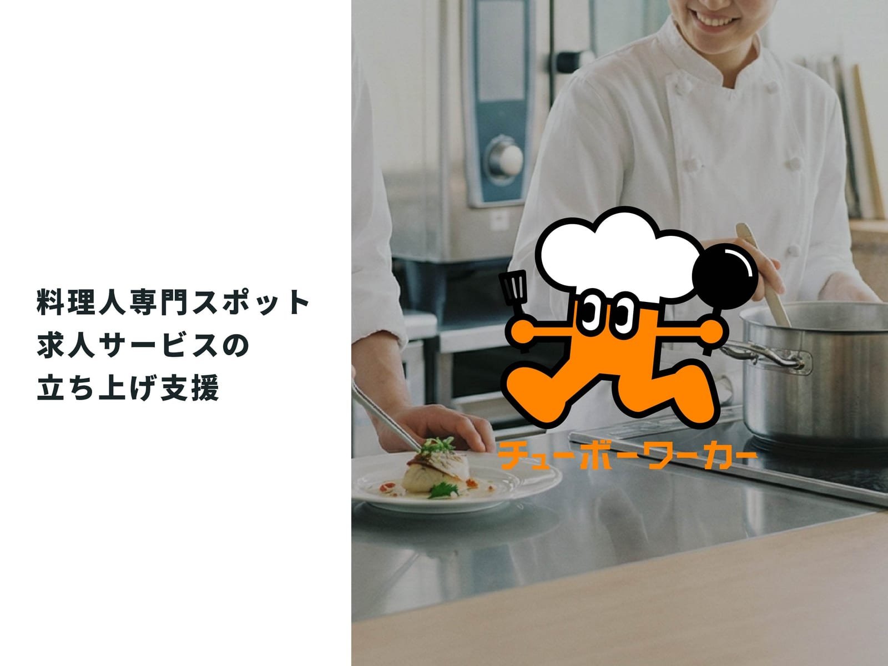
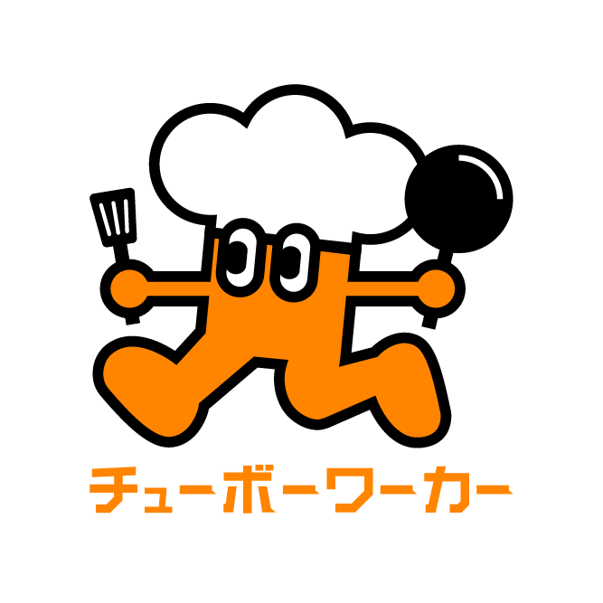
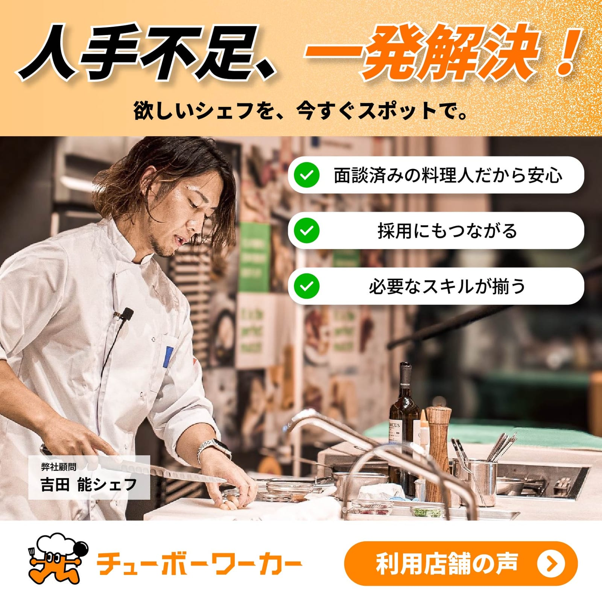
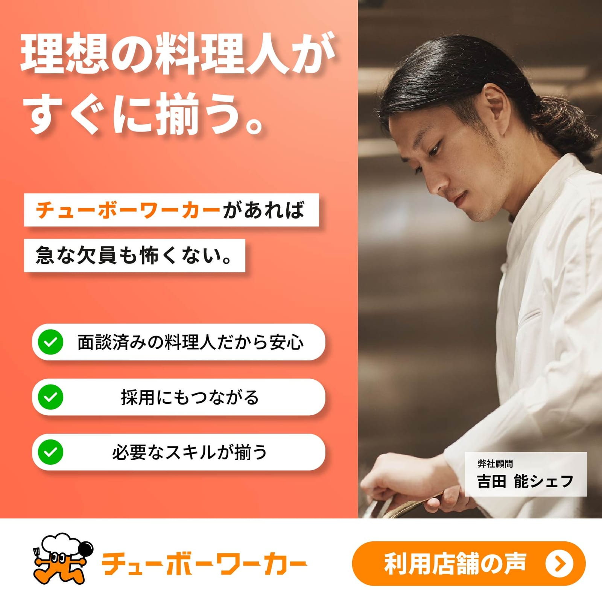

チューボーワーカー
料理人専門のスポット求人マッチングサービスの立ち上げ支援

01Overview — 料理人と飲食店をつなぐ、スポット求人サービス
飲食店は必要なときだけ料理人をスポットで募集でき、料理人は高時給で働ける、料理人専門のスポット求人マッチングサービスです。 立ち上げ期の事業に、業務委託(コントラクター)として参画しました。
02Project Info
- 期間
- 2025年8月〜10月(約3か月)
- 体制
- 社長と2名
- 役割
- 業務委託(コントラクター)／LP制作・フォーム構築・顧客管理設計・LINE公式運用
- 使用領域
- LP制作、フォーム構築、業務自動化、DB設計、LINE公式アカウント運用
03Situation — 状況
立ち上げ期でリソースが限られており、社長と二人三脚で事業を回していた。 LPも登録導線も顧客管理の仕組みも存在しない、ゼロからの状態だった。
04Task — バックオフィスというボトルネック
バックオフィス業務は手作業で1日あたり約2時間を要していた。 私はここを「事業のスピードを止めているボトルネック」と捉え、 “社長が営業に集中できる時間を生み出すこと” を自分の役割と定義した。
05Action — 意思決定と行動
専門であるデザインに閉じず、事業が前に進むために必要なことは自分の役割と定義して取りに行った。LP制作、登録フォーム構築、顧客管理、LINE公式アカウント運用まで、事業に必要なことは何でも担った。
社長から「どこを仕組み化すれば最も事業が伸びるか」と繰り返し問われる中で、目の前の作業を効率化するのではなく、事業全体の伸びしろから逆算して優先順位を判断する発想に切り替えた。
当時はAIを実務にどう組み込むかの前例がほとんどない状態だった。AIと対話しながら自動化の仕組みを設計・実装し、小さく作っては社長に使ってもらい、反応を見ながら改善を重ねた。
その判断に基づき、登録フォームと顧客管理を連携させ、入力から管理までを自動化する仕組みを設計・構築した(自動生成IDによるレコード管理とDB設計を含む)。
専門外・未経験の自動化領域にも自ら踏み込んで実装した。
最大の難所 — 慎重さとスピードの両立
最も難しかったのは、個人情報を扱うデータベースの設計判断だった。 顧客IDの自動生成など、後から変更すると大きな手戻りになる箇所のため慎重な設計が求められる一方、 社長の業務負担は今すぐ軽減したいという制約もあった。 どこまで仕組み化すべきか、社長と優先順位が分かれる場面もあった(社長は早く結果を出したい、自分はミスを防ぐ仕組みを優先したい)。
「目先の作業効率化」ではなく「将来にわたって使い続けられる基盤」を優先すると判断。 まず最も負担の大きい登録フォームと顧客管理の連携から着手し、効果を目に見える形で示すことで、納得を得ながら進めた。 結果、構築した仕組みは現在も稼働し続けている。
つくったもの
本プロジェクトは実クライアントの稼働中サービスであり、顧客の個人情報を扱うため、実画面の掲載は控えています。 以下、構築したものの概要を記載します。
LP(ランディングページ)
サービスの世界観と価値を伝え、飲食店・料理人双方の登録導線への入口となるページを制作した。
登録フォーム
料理人・飲食店の登録情報を収集するフォームを構築。入力された情報が顧客管理システムへ自動連携される設計とし、手入力による転記作業とミスを排除した。
顧客管理システム
自動生成IDによるレコード管理とデータベース設計を実施。登録者・登録店舗の情報を一元管理し、手作業で行っていた管理業務を自動化した。個人情報を扱うため、将来の変更にも耐える基盤設計を優先した。
LINE公式アカウント運用
問い合わせ対応のテンプレート化・運用設計を実施し、社長が一件ずつ対応していた工数を削減した。
ロゴ

作成した広告(Instagram用)


06Result — 成果
この仕組み化によって社長が営業に専念できる体制を構築。その土台の上で、3か月のうちに事業は次のように成長した。
約2時間→約10分
15名→100名
3店舗→19店舗
構築した顧客管理システムは、現在も稼働中。
07Learning — 学び
「何を作るか」より「どこを仕組み化すれば事業が伸びるか」から逆算する視点を得た。 つくる力は、事業のボトルネックに当てて初めてインパクトになると学んだ。